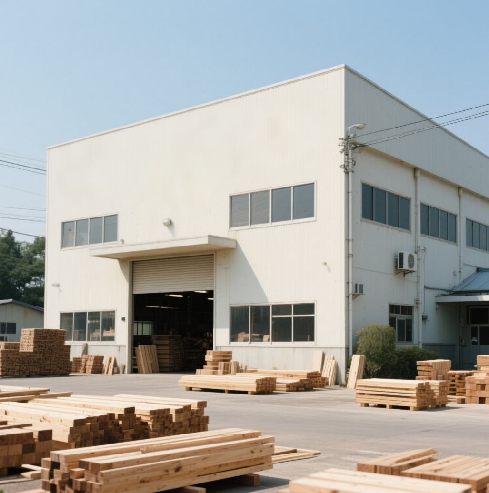

Since 1985
Humble Beginnings
Founded by master craftsman Liang Wei in a small workshop in Hangzhou, Sakura Sourceflow began with a simple vision: to create beautiful wooden products that honored both nature and tradition.
What started as a family business crafting traditional Chinese wooden tableware has grown into an internationally recognized brand, while maintaining our commitment to artisanal quality.